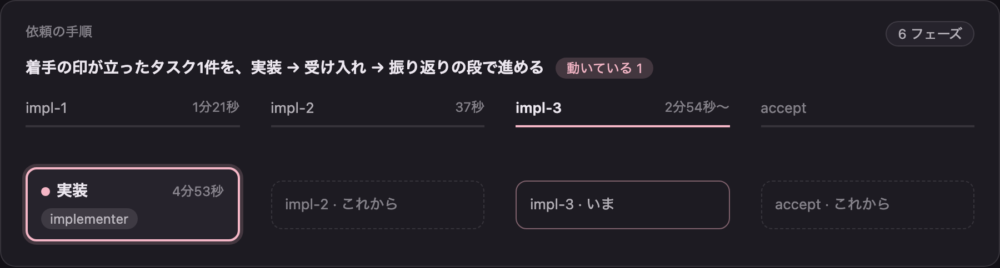
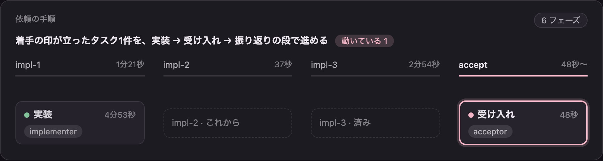
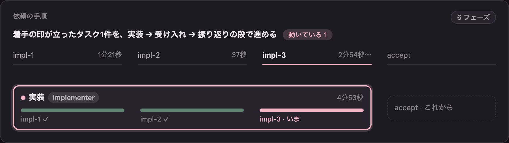
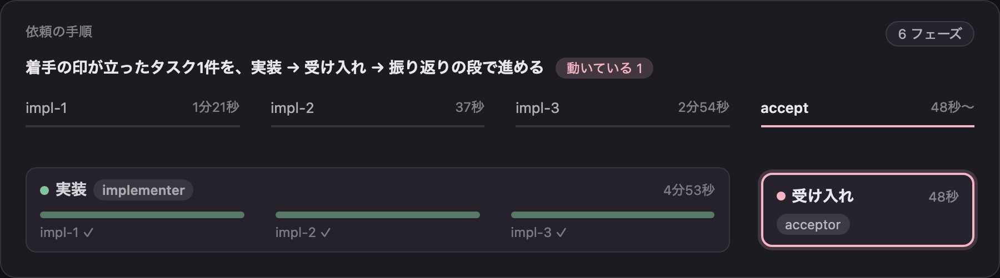
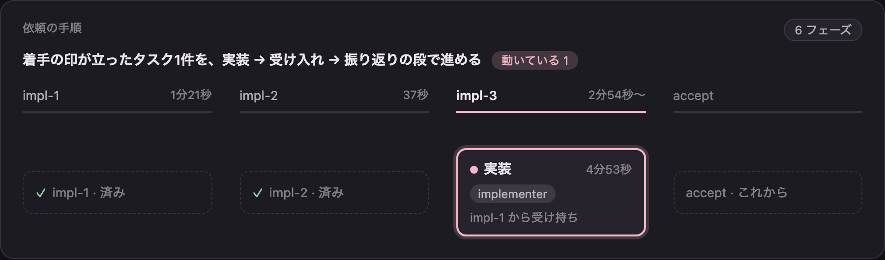
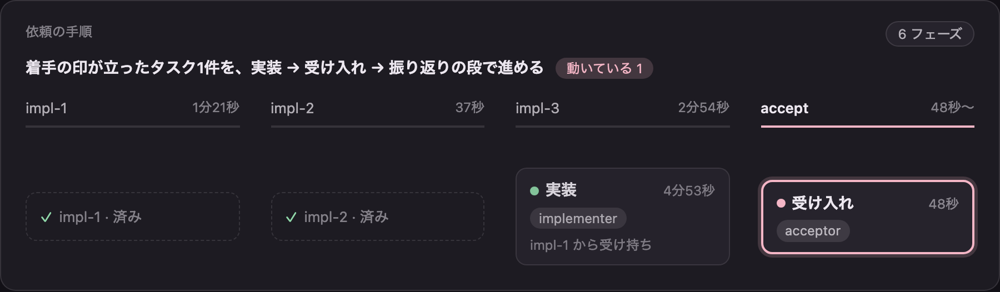
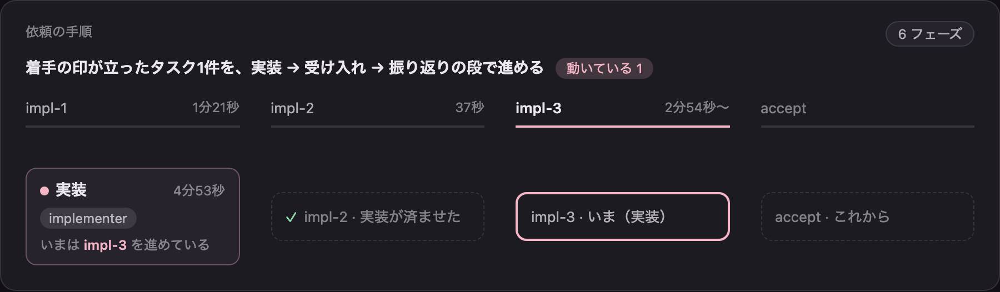
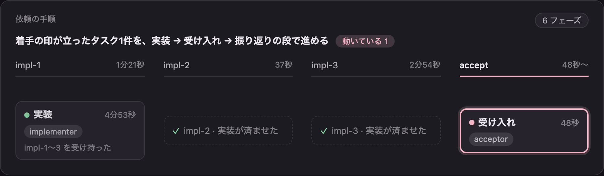

手順の図で、範囲を受け持つ実装役の箱の置き方 — 今と3案
実装役は1つのエージェントで impl-1〜impl-3 を受け持ち、phase_result で段を進める。図（workflow-diagram.ts）は箱をエージェントが呼ばれたときの phaseTitle（impl-1）の列に置き、走っている箱は光るので、見出しが impl-3 なのに impl-1 の列が「いま」に見える。各案を「impl-3 を実装中」と「受け入れ中（実装は済み）」の2場面で描いた。見本の HTML（scene.html?form=now|a|b|c&at=impl3|accept）は見た目の近似で、矢印は省いた。
今


案A 範囲にまたがる箱（推奨）
箱を受け持った列の幅に広げ、中に段ごとの目盛りを置く。光る目盛りが見出しの impl-3 の真下に来る。1つのエージェントが3段を受け持つ事実がそのまま見える。


案B 箱を今の段の列へ移す
箱を受け持ちの中の今の段の列へ動かし、通り過ぎた列は「済み」の空き箱にする。形の変更が最小だが、箱が段ごとに横へ跳ぶ。


案C 箱は動かさず、光を今の列の空き箱へ
箱は impl-1 の列のまま光を弱め、一言で今の段を言う。光は impl-3 の空き箱に移す。光る所と箱が分かれ、どちらが「いま」かを読む手間が残る。


見比べ
| 観点 | 案A | 案B | 案C |
|---|---|---|---|
| 光る所と見出しの今の段が縦にそろう | そろう | そろう | 空き箱だけそろう |
| 1つのエージェントが範囲を受け持つと分かる | 目盛りで分かる | 一言だけ | 一言だけ |
| 段が進むときの動き | 目盛りの光が進む | 箱が横へ跳ぶ | 空き箱の光が移る |
| 図の組み方の変更 | 列に「範囲の箱」を足す（列またぎ・矢印の端） | 箱の列を planCurrentKey で決め直す | 箱の強調の条件と一言 |
| 列の上限（4）との関係 | 範囲が4列を超えると畳みが要る | 影響なし | 影響なし |